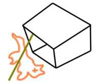

Любителями фантастики подмечено: герои книг, игр и фильмов либо вообще ничем не питаются, либо едят какие-то странные и фантастические блюда. Сегодня мы решили познакомить наших читателей с кулинарными рецептами фантастических миров.

Устройство для ловли Альфа.
Как поймать Альфа:
Соорудите на территории дома Таннеров несколько простых ловушек (см. рис.). В качестве приманки используйте накачанную снотворным кошку. Подождите несколько минут. Альф должен понять, что в пределах его досягаемости находится беспомощная кошка. Если он не идет, выманите его из укрытия с помощью заранее записанного кошачьего мяуканья.
Способ приготовления:
Вымойте (с мылом!), очистите и освежуйте Альфа. Большим острым ножом отрежьте нижнюю выступающую часть морды, начиная прямо под глазами и заканчивая челюстью. Разогрейте духовку до 180 градусов. Положите нарезанное мясо в большую сковородку, залейте соусом. Поставьте сковородку в духовку на 30 минут (или до готовности). Несколько раз во время готовки подливайте соус. После приготовления достаньте жаркое и остудите. Выньте из вишен косточки и засуньте их (вишенки) по одной в каждую ноздрю. Украсьте блюдо ананасовыми дольками и посыпьте петрушкой. Приятного аппетита!
Ингредиенты:
1,5 фунта вареного хоббитского мяса;
3 картофелины;
2 луковицы;
2 зеленых перца;
1 фунт грибов;
сливочное масло.
Способ приготовления:
Порубите мясо, очистите и натрите картофель. Мелко порежьте лук, перец и грибы. Возьмите большую кастрюлю, растопите масло на среднем огне. Добавьте лук и перец. Готовьте, пока лук не станет прозрачным. Затем добавьте картофель, грибы и хоббитское мясо. Как только картофель покроется хрустящей корочкой, блюдо готово.
Хозяйке на заметку:
1. Если у вас кончились хоббиты, их можно заменить гномами, свининой или, на худой конец, курицей.
2. Помните, что хоббиты — хитрые существа. На их готовку может уйти больше времени, чем вы рассчитывали.
Вампиры не очень-то годятся в пищу. Вплоть до сегодняшнего дня мы не нашли способа так убить вампира, чтобы после этого его можно было съесть. На свету они рассыпаются в пыль, а после осинового кола в сердце или святой воды от них вообще ничего не остается.
Если вам известны другие способы уничтожения вампиров (и особенно — рецепты их приготовления!), пожалуйста, свяжитесь с нами.
Способ приготовления:
Хорошенько облейтесь святой водой. На шею повесьте ожерелье из волчьих ягод (не глотать! Опасно для человека!). Зарядите пистолет серебряной пулей и подождите, пока не появится оборотень (можете загнать его сами, если есть такое желание). После того, как вы убили оборотня, его необходимо освежевать. Полученную вырезку поместите в подходящую по размеру посуду. Добавьте мелко порезанную морковь и воду. Жарьте до готовности. Перед подачей на стол посыпьте петрушкой.
Способ приготовления:
Использование Чужих в пищу довольно опасно, поскольку их кислотная кровь может растворить слизистую оболочку желудка и вызывать несварение и множество других проблем. Однако если развести кровь водой в соотношении один к двум и добавить столовую ложку на стакан полученной смеси, получится замечательный маринад.
Самые вкусные части Чужого — это мозг (потребуется очень прочный нож) и вырезка из нижней части внутренней челюсти. Чтобы добраться до нее, широко раскройте пасть Чужого и засуньте руки в глотку. Примечание: перед этим Чужого необходимо убить. Мясо готовится так же, как обычный бифштекс. Перед подачей на стол употребить внутрь “Мезим-Форте” или “Лопедиум” по вкусу.
Ингредиенты:
1 деревня эвоков;
30 литров воды;
1 столовая ложка соли;
3 чайных ложки перца.
Способ приготовления:
Варить эвоков при температуре 300 градусов в течение 2 часов или до готовности. Мех можете не удалять, он добавит блюду оригинальный вкус, хотя есть его, возможно, станет сложнее. После того, как мясо сварится, удалите кости. Добавьте пару килограмм крупно порезанной моркови и столько же горошка. Готовьте 30 минут в хорошо разогретой духовке или ядерном реакторе. Соль и перец по вкусу.
Способ приготовления:
Достаньте пару эвоков (их можно приобрести в любом галактическом продуктовом магазине). Прокипятите их на медленном огне до отделения костей от мяса. Это займет примерно час. Затем осторожно снимите кожу. Далее аккуратно порежьте мясо на маленькие кусочки (помните, что ноги и грудки эвоков особенно вкусны) и поместите его в большую кастрюлю. Готовность мяса можно определить по коричневатому цвету. Добавьте мелко порезанные грибы и овощи — блюдо можно подавать на стол.
Хозяйке на заметку:
Мясо эвоков, приготовленное по данному рецепту, на вкус почти не отличается от курицы!
Способ приготовления:
Снимите кожу с минбарца (дипломатов лучше не использовать, из-за постоянного стресса у них слишком жилистое мясо). Отдельно сварите позвоночник, он вам еще пригодится. Зажарьте минбарца на открытом огне. Предварительно порубив на части, положите мясо в большую кастрюлю. Добавьте овощи по вкусу (мы рекомендуем использовать такие ингредиенты, как нарнковь, центаврофель или пакмарушку, однако подойдут и обычные земные или минбарские растения). Варите до готовности. Перед употреблением добавьте отвар, оставшийся после скелета, и убедитесь, что поблизости нет рейнджеров.
Материалы взяты из независимых интернет-источников